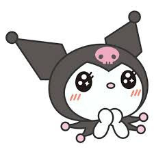
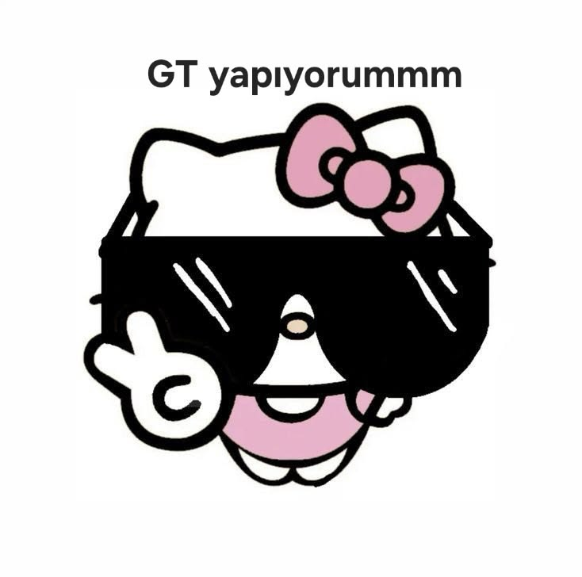
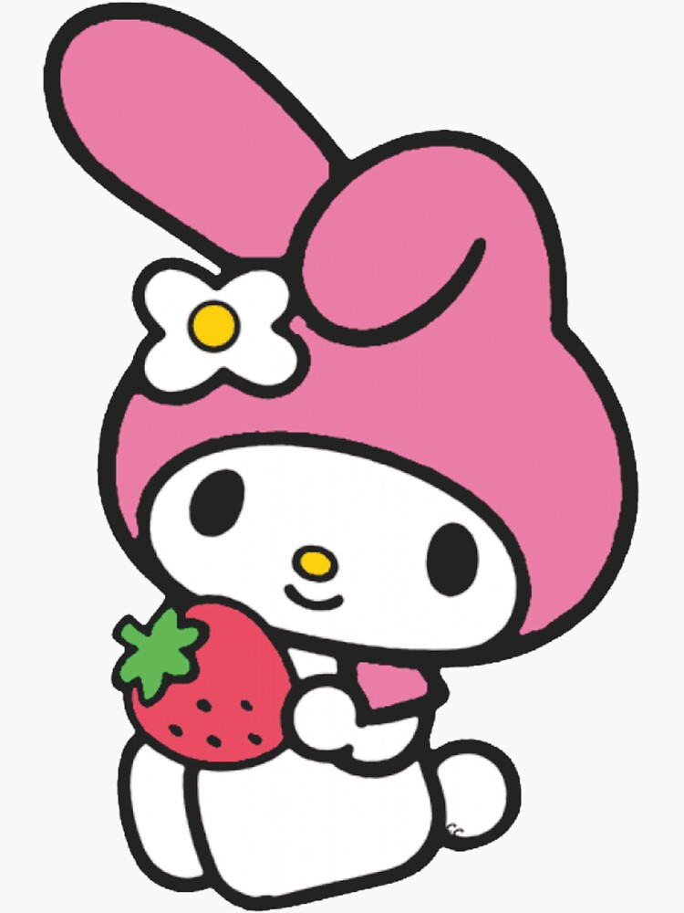

Куромі
Вікіпедія персонажа
Куромі (яп. クロミ) — персонаж-талісман, що належить Sanrio, і темніший аналог My Melody. Вона дебютувала в аніме-серіалі 2005 року «Onegai My Melody». Вона представлена як бунтівний персонаж зі злочинною жилкою та прихованою дівочою стороною. Творець дизайну її персонажа невідомий, оскільки студія Onegai My Melody, Studio Comet, та Sanrio мають дві різні заяви щодо її дизайнера.
Галерея світин


